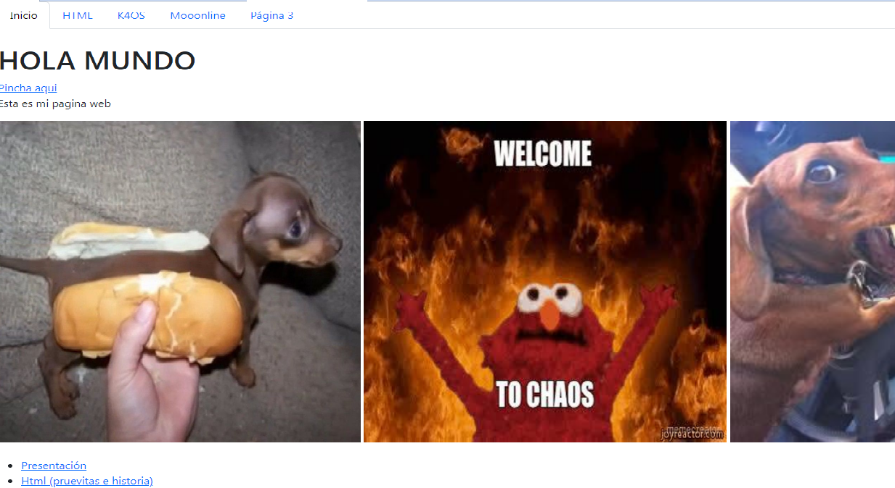
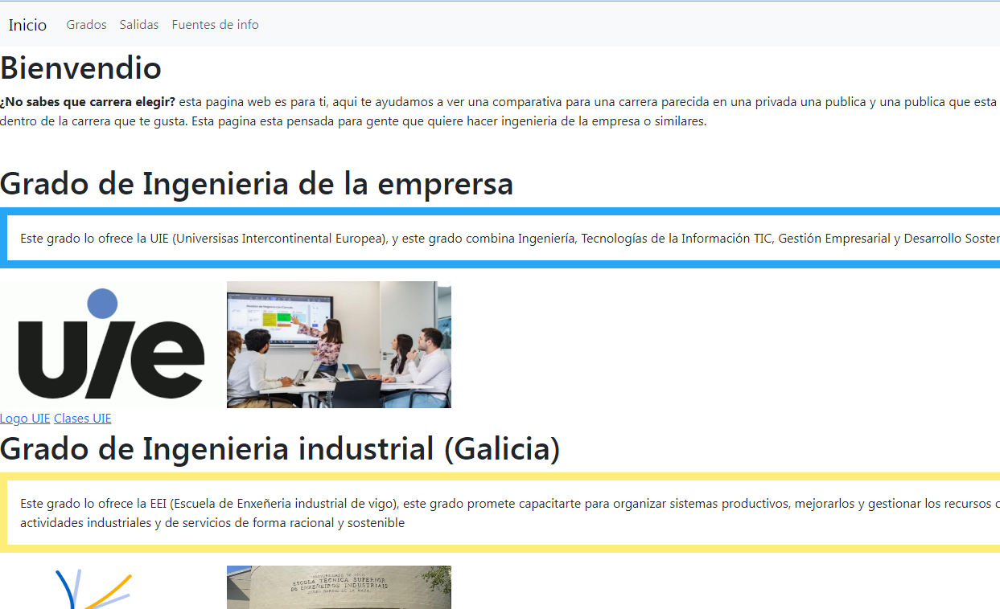

Begoña Rivas Nolasco2ºB BachilleratoSalesianos Coruña Desarrolladora en formación con conocimientos de programación y desarrollo web. Capacidad para crear proyectos, resolver problemas mediante código y trabajar con diferentes tecnologías. Persona autodidacta, proactiva y con motivación por seguir aprendiendo y mejorando mis habilidades técnicas. |

En este trabajo empezamos a manejar el html con parrafos titulos comandos basicos videos e imagenes
Accede a la Practica
En este trabajo teniamos que explicar que carreras queriamos sus ventajas y desventajas, y sus salidas.
Accede al trabajoContacto: bego.rivas@aulasalesianoscoruna.es
Imagen diseñada con GetAvataaars
Parrafo y color hecho con ayuda de Chatgpt